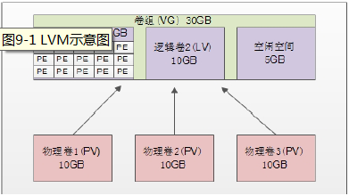

一、磁盘配额
1、磁盘配额概念
磁盘配额就是管理员可以为用户所能使用的磁盘空间进行配额限制，每一用户只能使用最大配额范围内的磁盘空间。
2、磁盘配额条件
内核必须支持磁盘配额
[root@localhost ~]#grep CONFIG_QUOTA /boot/config-2.6.32-279.el6.i686
CONFIG_QUOTA=y
CONFIG_QUOTA_NETLINK_INTERFACE=y
#CONFIG_QUOTA_DEBUG is not set
CONFIG_QUOTA_TREE=y
CONFIG_QUOTACTL=y
系统中必须安装了quota工具，查看命令如下：
[root@localhost ~]#rpm -q quota
quota-3.17-16.el6.i686
要支持磁盘配额的分区必须开启磁盘配额功能，这个功能需要手工开启，不再是默认就开启的
3、概念
1）用户配额和组配额
2）磁盘容量限制和文件个数限制
3）软限制和硬限制
4）宽限时间
如果用户占用的空间处于软限制与硬限制之间，系统会在用户登陆时警告用户磁盘将满，这个时间就是宽限时间 ，默认是7天。如果到了宽限时间，用户的磁盘占用量还超过软件软件限制，那么软限制就会升级为硬限制。
4、磁盘配额规划
磁盘配额是限制普通用户在分区上使用磁盘空间和文件个数，所以我们需要指定一个分区。手工建立一个5GB的/dev/sdb1分区，把它挂载到/disk目录当中。
建立被限制的用户和用户组。假设需要限制lamp1、lamp2、lamp3，这三个用户属于brother用户组。
其中brother组磁盘容量硬限制为500MB，软件限制450MB，文件个数不做限制。lamp1用户，磁盘容量硬限制为50MB，软件限制为40MB，文件个数硬限制为10个，软限制为8个。lamp2和lamp3用户磁盘容量硬限制为250MB，软限制为200MB，文件个数不做限制。
大家发现lamp1、lamp2、lamp3用户加起来的磁盘容量限制550MB，超过了brother组的磁盘容量限制500MB。这样，某个用户可能达不到自己的用户限制，而达到组限制时就不能再写入数据了。如果用户限制和组限制同时存在，那么哪个限制更小，哪个限制优先生效。
将系统宽限时间改为8天。
5、磁盘配额步骤
1）建立500MB的/dev/sdb1分区，并将它挂载于/disk目录当中
2）建立需要做限制的用户和用户组
[root@localhost ~]#groupadd brother
[root@localhost ~]#useradd -G brother lamp1
[root@localhost ~]#useradd -G brother lamp2
[root@localhost ~]#useradd -G brother lamp3
[root@localhost ~]#passwd lamp1
[root@localhost ~]#passwd lamp2
[root@localhost ~]#passwd lamp3
3）在分区上开启磁盘配额功能
[root@localhost ~]#mount -o remount,usrquota,grpquota /disk
#重新挂载/disk分区，并加入用户和用户组的磁盘配额功能
要想永久生效，则需修改/etc/fstab文件：
[root@localhost ~]#vi /etc/fstab
/dev/sdb1 /disk ext4 defaults,usrquota,grpquota 0 0
[root@localhost ~]#mount -o remount /disk
#修改配置文件如果想要生效，必须重启系统，否则也需要把分区重新挂载一遍
4）建立磁盘配额的配置文件
[root@localhost ~]#quotacheck [选项] [分区名]
选项：
-a: 扫描/etc/mtab文件中所有启用磁盘配额功能的分区。如果加入此参数，命令后面就不需要加入分区名了
-c: 不管原有的配置文件，重新扫描并建立新的配置文件
-u: 建立用户配额的配置文件，也就是生成aquota.user文件
-g: 建立组配额的配置文件，会生成aquota.group文件
-v: 显示扫描过程
-m: 强制以读写的方式扫描文件系统，和-M类似。一般扫描根分区时使用。
-f: 强制扫描文件系统，并写入新的配置文件。一般扫描添加的硬盘分区时使用。
注意：建立磁盘配额的配置文件之前须先关闭SELinux，否则会报错。
[root@localhost ~]#quotacheck -avug #建立用户配额和组配额
[root@localhost ~]#ll /disk/ #查看/disk目录中两个配置文件是否被建立
-rw------- 1 root root 6144 4月 17 01:08 aquota.group
-rw------- 1 root root 6144 4月 17 01:08 aquota.user
如果需要给根分区开启配额功能，需要
[root@localhost ~]#vi /etc/fstab
UUID=e0e4ad96-855a-434c-8df0-d6c776708779 / ext4 defaults,usrquota,grpquota 1 1
#开启磁盘配额功能
[root@localhost ~]#mount -o remount / #重新挂载"/"分区
[root@localhost ~]#quotacheck -avugm
自动扫描/分区建立配额配置文件时，因为/分区已经挂载成读写系统，而quotacheck需要把分区挂载成只读分区，然后建立配置文件，最后再挂载回来，所以不能直接在/分区建立配置文件。这时需要使用-m强制以读写方式扫描文件系统
5）设置用户和组的配额限制
[root@localhost ~]#edquota [选项] [用户名或组名]
选项：
-u 用户名: 设定用户配额
-g 组名: 设定组配额
-t: 设定宽限时间
-p: 复制配额限制。如果已经设定好某个用户的配额限制，其他用户的配额限制如果和这个用户相同，那么可以直接复制配额限制，而不用都手工指定
[root@localhost ~]#edquota -u lamp1 #edquota命令进入后，就是标准的vi操作
Disk quotas for user lamp1 (uid 500):
#磁盘配额是设定用户lamp1（uid 500）
Filesystem blocks soft hard inodes soft hard
/dev/sdb1 0 40000 50000 0 8 10
#分区名 已占用容量 软限制 硬限制 已占用文件数 软限制 硬限制
[root@localhost ~]#edquota -u lamp2
Disk quotas for user lamp2 (uid 501):
#磁盘配额是设定用户lamp1（uid 501）
Filesystem blocks soft hard inodes soft hard
/dev/sdb1 0 250000 300000 0 0 0
[root@localhost ~]#edquota -g brother
Disk quotas for group brother (gid 500):
#磁盘配额是设定组borther（gid 500）
Filesystem blocks soft hard inodes soft hard
/dev/sdb1 0 450000 500000 0 0 0
6）配额复制
lamp3用户的配额值和lamp2用户完全一样，可以使用lamp2用户作为模板进行复制。
[root@localhost ~]#edquota -p lamp2 -u lamp3
#命令 -p 源用户 -u 目标用户
7）修改宽限时间
将宽限时间改为8天，修改命令如下：
[root@localhost ~]#edquota -t
Grace period before enforcing soft limits for users:
Time units may be: days, hours, minutes, or seconds
Filesystem Block grace period Inode grace period
/dev/sdb1 8days 8days
#分区名 容量的宽限时间 个数的宽限时间
8）启动和关闭配额
配额的配置完成，接下来只需要启动配额，启动命令如下：
[root@localhost ~]#quota [选项] [分区名]
选项：
-a: 依据/etc/mtab文件启动所有的配额分区。如果不加-a，后面一定要指定分区名
-u: 启动用户配额
-g: 启动组配额
-v: 显示启动过程的信息
[root@localhost ~]#quotaon -vug /disk/
/dev/sdb1 [/disk]: group quotas turned on
/dev/sdb1 [/disk]: users quotas turned on
#启动/disk分区的配额
或者写这条命令也可以：quotaon -avug
关闭配额的命令如下：
[root@localhost ~]#quotaoff [选项] [分区名]
选项：
-a: 依据/etc/mtab文件关闭所有的配额分区。如果不加-a，后面就一定要指定分区名
-u: 关闭用户配额
-g: 关闭组配额
[root@localhost ~]#quotaoff -a #依据/etc/mtab文件关闭配额分区
6、磁盘配额查询
quota查询用户或用户组配额：
[root@localhost ~]#quota [选项] [用户名或组名]
选项：
-u: 用户名： 查询用户配额
-g: 组名： 查询组配额
-v: 显示详细信息
-s: 以习惯单位显示容量大小，如M，G
[root@localhost ~]#quota -uvs lamp1 #显示lamp1用户的配额
requota查询文件系统配额
[root@localhost ~]#requota [选项] [分区名]
选项：
-a: 依据/etc/mtab文件查询配额。如不加-a选项，就一定要指定分区名
-u: 查询用户配额
-g: 查询组配额
-v: 显示详细信息
-s: 以习惯单位显示容量大小
[root@localhost ~]#requota -avugs #查询用户和组的所有配额
7、测试
8、非交互设定用户磁盘配额
[root@localhost ~]#setquota -u 用户名 容量软件限制 容量硬限制 个数软限制 个数硬限制 分区名
例：
[root@localhost ~]#setquota -u lamp4 10000 20000 5 8 /disk
#设定用户在/disk分区的容量软件限制为10MB，硬限制20MB。文件个数软限制5个，硬限制8个。
二、LVM逻辑卷管理
1、简介
LVM是Logical Volume Manager的简称，中文就是逻辑卷管理

物理卷（PV,physical Volume）: 就是真正的物理硬盘或分区。
卷组（VG，Volume Group）: 将多个物理卷合起来就组成了卷组，组成同一个卷组的物理卷可以是同一个硬盘的不同分区，也可以是不同硬盘上的不同分区。我们可以把卷组想像为一个逻辑硬盘。
逻辑卷（LV，Logical Volume）: 卷组是一个逻辑硬盘，硬盘必须分区之后才能使用，这个分区我们称作逻辑卷。逻辑卷可以格式化和写入数据。我们可以把逻辑卷想象成分区。
物理扩展（PE，Physical Extend）: PE 是用来保存数据的最小单元，我们数据实际上都是写入PE当中，PE的大小是可以配置的，默认是4MB。PE和基本文件系统中的block数据块非常类似。
2、建立LVM的步骤：
首先需要把物理硬盘分区，当然可以是整块物理硬盘。
然后把物理分区建立成物理卷（PV），也可以把整块硬盘都建立为物理卷。
接下来把物理卷合成为卷组（VG）。卷组就已经可以动态的调整大小了，可以把物理分区加入卷组，也可以把物理分区从卷组中删除。
最后就是把卷组再划分成为逻辑卷（LV），当然逻辑卷也是可以直接调整大小的。我们可以把逻辑卷想像成分区，所以也需要格式化和挂载。
3、建立物理卷
1）硬盘分区
创建方式就是使用fdisk交互命令，不过需要注意的是分区的系统ID不再是Linux默认的分区ID号83了，而要改成LVM的ID号8e。
2）建立物理卷
[root@localhost ~]#pvcreate [设备文件名]
建立物理卷时，既可以把整块硬盘都建立成物理卷，也可以把某个分区建立成物理卷。
[root@localhost ~]#pvcreate /dev/sdb #将/dev/sdb整块硬盘建立成物理卷
[root@localhost ~]#pvcreate /dev/sdb5 #将/dev/sdb5分区建立成物理卷
3）查看物理卷
[root@localhost ~]#pvscan
PV /dev/sdb5 lvm2 [1.01GiB]
PV /dev/sdb6 lvm2 [1.01GiB]
PV /dev/sdb7 lvm2 [1.01GiB]
Total: 3 [3.03GB] / in use: 0 [0 ] / in no VG: 3 [3.03 GiB]
#总计：3个物理卷[大小] / 使用了0个卷[大小] / 空闲3个卷[大小]。
[root@localhost ~]#pvdisplay #查看物理卷的详细信息
"/dev/sdb5" is a new physical volume of "1.01GB"
---NEW Physical volume---
PV Name /dev/sdb5 #PV名
VG Name #属于的VG名，还没有分配，所以空白
PV Size 1.01GiB #PV的大小
Allocatable NO #是否已经分配
PE size 0 #PE大小，因为还没有分配，所以PE大小也没有指定
Total PE 0 #PE总数
Free PE 0 #空闲的PE数
Allocated PE 0 #可分配的PE数
PV UUID CEsVz3-f0sD-elw0-wkHZ-iaLq-06aV-xtQNTB #PV的UUID
4）删除物理卷
[root@localhost ~]#pvremove /dev/sdb7 #删除/dev/sdb7这个物理卷
4卷组管理
1）建立卷组
[root@localhost ~]#vgcreate [选项] 卷组名 物理卷名
选项：
-s PE 大小: 指定PE大小，单位可以是MB，GB，TB等。如果不写默认是4MB。
[root@localhost ~]#vgcreate -s 8MB scvg /dev/sdb5 /dev/sdb6
#将/dev/sdb5、/dev/sdb6加入卷组scvg
2）查看卷组
查看卷组的命令同样是两个，vgscan主要是查看系统中是否有卷组，而vgdisplay则是查看卷组的详细状态。
3）增加卷组容量
[root@localhost ~]#vgextend scvg /dev/sdb7 #把/dev/sdb7物理卷也加入scvb卷组
4）减小卷组容量
[root@localhost ~]#vgreduce scvg /dev/sdb7 #在卷组中删除/dev/sdb7物理卷
[root@localhost ~]#vgreduce -a #删除所有的未使用物理卷
5）删除卷组
[root@localhost ~]#vgremove scvg
卷组删除之后才能删除物理卷。如果卷组中已经分配了逻辑卷，必须先删除逻辑卷之后，才能删除卷组。
5、逻辑卷管理
1）建立逻辑卷
[root@localhost ~]#lvcreate [选项] [-n 逻辑卷名] 卷组名
选项：
-L 容量： 指定逻辑卷大小，单位MB，GB，TB等
-l 个数： 按照PE个数指定逻辑卷大小，这个参数需要换算容量，太麻烦
-n 逻辑卷名： 指定逻辑卷名
[root@localhost ~]#lvcreate -L 1.5G -n lamplv scvg #在scvg卷组中建立1.5GB的lamplv逻辑卷
Logical volume "lamplv" created
建立逻辑卷之后，还要格式化和挂载之后逻辑卷才能使用。格式化和挂载操作与普通分区一样。
[root@localhost ~]#mkfs -t ext4 /dev/scvg/lamplv #格式化
[root@localhost ~]#mkdir /disklvm #建立挂载点
[root@localhost ~]#mount /dev/scvg/lamplv /disklvm #挂载分区
[root@localhost ~]#mount #查看已经挂载的分区
......省略部分内容......
/dev/mapper/scvg-lamplv on /disklvm type ext4 (rw)
如果需要开机自动挂载，需要写入/dev/fstab文件。
2）查看逻辑卷
[root@localhost ~]#lvscan #查看系统中是否有逻辑卷
[root@localhost ~]#lvdisplay #查看系统中逻辑卷详细信息
3）调整逻辑卷大小
[root@localhost ~]#lvresize [选项] 逻辑卷设备文件名
选项：
-L 容量： 安装容量调整大小，单位KB，GB，TB等。使用+代表增加空间，-号代表减少空间。如果直接写容量，代表设定逻辑卷大小为指定大小
-l 个数： 按照PE个数调整逻辑卷大小
[root@localhost ~]#lvresize -L 2.5G /dev/scvg/lamplv #增加lamplv逻辑卷的大小到2.5GB
Extending logical volume lamplv to 2.50GiB
Logical volume lamplv successfully resized
也可以这样写
[root@localhost ~]#lvresize -L +1G /dev/scvg/lamplv
此时逻辑卷的大小已经改变，但是分区的大小还未变
[root@localhost ~]#df -h /disklvm/
/dev/mapper/scvg-lamplv 1.5G 35M 1.4G 3% /disklvm
如果需要让分区使用这个新的逻辑卷，还要使用resize2fs命令来调整分区的大小。LVM不需要卸载分区，直接就可以调整分区大小。
[root@localhost ~]#resize2fs [选项] [设备文件名] [调整的大小]
选项：
-f： 强制调整
设备文件名： 指定调整哪个分区的大小
调整的大小： 指定把分区调整到多大，要加M，G等单位。如果不加大小，会使用整个分区
[root@localhost ~]#resize2fs /dev/scvg/lamplv #将调整过大小的逻辑卷赋予分区
[root@localhost ~]#df -h /disklvm/
/dev/mapper/scvg-lamplv 2.5G 35M 2.4G 2% /disklvm
4）删除逻辑卷
[root@localhost ~]#lvremove 逻辑卷设备文件名
删除lamplv逻辑卷，先卸载后删除
[root@localhost ~]# umonut /dev/scvg/lamplv
[root@localhost ~]#lvremove /dev/scvg/lamplv
三、RAID磁盘阵列
1、简介
1）RAID 0
RAID 0也叫Stripe或Striping（带区卷）
2）RAID 1
RAID 1也叫Mirror或Mirroring（镜像卷），由两块硬盘组成
3）RAID 10或RAID 01
如果先用两块硬盘组成RAID 1，再用两块硬盘组成另一个RAID 1，最后把这两个RAID 1组成RAID 0，这种方法我们称作RAID 10。如果先组成RAID 0，再组成RAID 1，就是RAID 01。
4）RAID 5
RAID 5最少需要三块以上的硬盘组成，当然硬盘大小也应当一致。
命令模式设置RAID 5
1）建立三个2GB的分区和一个2GB的备份分区
2）建立RAID5
[root@localhost ~]# mdadm [模式] [RAID设备文件名] [选项]
模式：
Assemble: 加入一个已经存在的阵列
Build: 创建一个没有超级块的阵列
Create: 创建一个阵列，每个设备具有超级块
Manage: 管理阵列，如添加设备和删除损坏设备
Misc: 允许单独对阵列中的设备进行操作，如停止阵列
Follow or Monitor: 监控RAID状态
Grow: 改变RAID的容量或阵列中的数目
选项：
-s, --scan: 扫描配置文件或/proc/mdstat文件，发现丢失信息
-D, --detail: 查看磁盘阵列详细信息
-C, --create: 建立新的磁盘阵列，就是调用Create模式
-a, --auto=yes: 采用标准格式建立磁盘阵列
-n, --raid-devices=数字: 使用几个硬盘或分区组成RAID
-l, --level=级别: 创建RAID的级别，可以是0，1，5
-x, --spare-devices=数字: 使用几个硬盘和分区组成备份设备
-a, --add 设备文件名: 在已经存在的RAID中加入设备
-r, --remove 设备文件名: 在已经存在的RAID中移除设备
-f, --fail 设备文件名: 把某个组成RAID的设备置为错误状态
-S, --stop: 停止RAID设备
-A, --assemble: 按照配置文件加载RAID
[root@localhost ~]# mdadm --create --auto=yes /dev/md0 --level=5 --raid-devices=3 \
--spare-devices=1 /dev/sdb5 /dev/sdb6 /dev/sdb7 /dev/sdb8
查看新建立的/dev/md0
[root@localhost ~]# mdadm --detail /dev/md0 #查看/dev/md0详细信息
/dev/md0: #设备文件名
Version : 1.2
Creation Time : Tue Apr 23 23:13:48 2013 #创建时间
Raid Level : raid5 #RAID级别
Array Size : 4206592（4.01 GiB 4.31 GB） #RAID总容量
Used Dev Size : 2103296（2.01 GiB 2.15 GB） #每个分区的容量
Raid Devices : 3 #组成RAID的设备数
Total Devices : 4 #总设备数
Peristance : Superblock is persistent
Update Time : Tue Apr 23 23:14:52 2013
State : clean
Active Devices : 3 #激活的设备数
Working Devices : 4 #可用的设备数
Failed Devices : 0 #错误的设备数
Spare Devices : 1 #备份的设备数
......省略部分内容......
查看RAID设备除了使用mdadm -D或mdadm --detail之外，也可以查看/proc/mdstat文件，这个文件中也保存了RAID相关信息
[root@localhost ~]#cat /proc/mdstat
3）格式化与挂载RAID
[root@localhost ~]# mkfs -t ext4 /dev/md0 #格式化
挂载命令如下：
[root@localhost ~]# mkdir /raid #建立挂载点
[root@localhost ~]# mount /dev/md0 /raid/ #挂载/dev/md0
[root@localhost ~]# mount
......省略部分内容......
/dev/md0 on /raid type ext4 (rw)
4）生成mdadm配置文件
在CentOS 6.x中，mdadm的配置文件并不存在，需要手工建立，这时我们使用以下命令建立/etc/mdadm.conf配置文件：
[root@localhost ~]# echo Devices /dev/sdb[5-8] >> /etc/mdadm.conf
#建立/ect/mdadm.conf配置文件名，并把组成RAID的分区的设备文件名写入
#注意如果有多个RAID，要把所有组成Raid的设备都放入配置文件，否则Raid设备重启后会丢失
#比如组成raid 10，就既要把分区设备文件名放入此文件，也要把组成Raid 0的Raid 1设备文件名放入
[root@localhost ~]# mdadm -Ds >> /etc/mdadm.conf
#查询和扫描RAID信息，并追加进/etc/mdadm.conf文件
[root@localhost ~]# cat /etc/mdadm.conf
Devices /dev/sdb5 /dev/sdb6 /dev/sdb7 /dev/sdb8
ARRAY /dev/md0 metadata=1.2 spares=1 name=localhost.localdomain:0
UUID=dd821fe5:8597b126:460a3afd:857c7989
5）设置开机自动挂载
自动挂载需要修改/etc/fstab配置文件：
[root@localhost ~]# vi /etc/fstab
/dev/md0 /raid ext4 defaults 1 2
#往/etc/fstab文件中加入此行
重新启动需要在这一步完成之后进行，否则会报错。
6）启动或停止RAID
RAID设备生效后，不用手工启动或停止。但是如果需要卸载RAID设备，必须手工停止RAID设备，命令如下：
[root@localhost ~]# mdadm -S /dev/md0 #停止/dev/md0设备
如果是要删除RAID设备，则要把所有和RAID相关的内容全部删除，才能保证系统不报错，步骤如下：
[root@localhost ~]# umount /dev/md0 #卸载/dev/md0设备
[root@localhost ~]# vi /etc/fstab
/dev/md0 /raid ext4 defaults 1 2
#在/etc/fstab文件中删除此行
[root@localhost ~]# mdadm -S /dev/md0 #停止/dev/md0设备
mdadm: stopped /dev/md0
[root@localhost ~]# vi /etc/mdadm.conf
ARRAY /dev/md0 metadata=1.2 spares=1 name=localhost.localdomain:0
UUID=dd821fe5:8597b126:460a3afd:857c7989
#删除或者注释此行
如果仅仅是停止设备，只要先卸载，再停止即可，停止完成后，再启动RAID命令如下：
[root@localhost ~]# mdadm -As /dev/md0 #启动RAID /dev/md0
mdadm: /dev/md0 has been started with 3 drives and 1 spare.
[root@localhost ~]# mount /dev/md0 /raid/ #挂载/dev/md0
7）模拟分区出现故障
我们模拟磁盘报错，看看备份分区是否会自动顶替错误分区。mdadm有一个选项-f，这个选项的作用就是把一个硬盘或分区变成错误状态，用来模拟RAID报错。命令如下：
[root@localhost ~]# mdadm /dev/md0 -f /dev/sdb7
mdadm: set /dev/sdb7 faulty in /dev/md0
[root@localhost ~]# mdadm -D /dev/md0
/dev/md0:
......省略部分输出.......
Active Devices : 2
Working Devices : 3
Failed Devices : 1
Spare Devices : 1
......省略部分输出......
Number Major Minor RaidDevice State
0 8 21 0 active sync /dev/sdb5
1 8 22 1 active sync /dev/sdb6
3 8 24 2 active sync /dev/sdb8
4 8 23 - faulty spare /dev/sdb7
备份分区/dev/sdb8已经激活，但是/dev/sdb7是失效了。
8）移除错误分区
既然已经报错了，把/dev/sdb7从RAID中删除，如果这是硬盘，就可以进行换硬盘处理了移除命令如下：
[root@localhost ~]# mdadm /dev/md0 --remove /dev/sdb7
mdadm: hot removed /dev/sdb7 from /dev/md0
9）添加新的备份分区
既然已经移除，那么需要再加入一个新的备份分区，以备下次硬盘或分区出现问题。
[root@localhost ~]# mdadm /dev/md0 --add /dev/sdb9 #把/dev/sdb9加入/dev/md0
mdadm: added /dev/sdb9
[root@localhost ~]# mdadm -D /dev/md0 #查询RAID /dev/md0详细信息
......省略部分内容......
Number Major Minor RaidDevice State
0 8 21 0 active sync /dev/sdb5
1 8 22 1 active sync /dev/sdb6
3 8 24 2 active sync /dev/sdb8
4 8 25 - spare /dev/sdb9